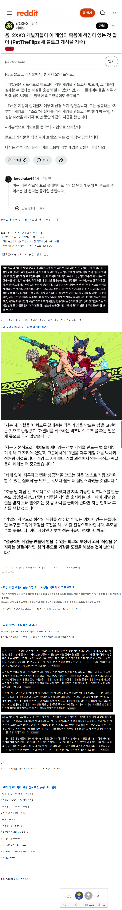
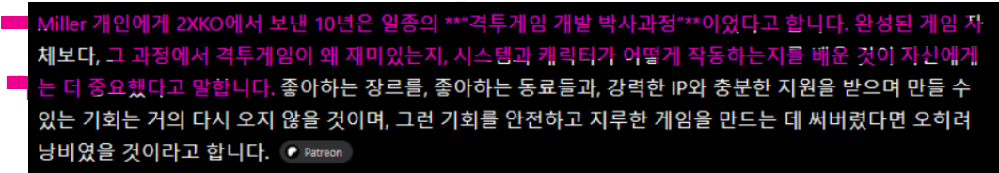

회사에서 10년간 투자한 게임이 개발자들 포트폴리오가 되버리는 기적


회사에서 10년간 투자한 게임이 개발자들 포트폴리오가 되버리는 기적
이게 상업적으로 실패할거라는 걸 현저하게 알고도 한거면 배임으로 볼 수 있음??
롤은 뭐 다른 게임 하는것마다 다 망하는 느낌이네
롤격, 롤클, 롤음악게임 다 망하지 않음?
캐릭터 외형이랑 설정을 전부 찰흙덩어리로 바꿔도 전혀 무관한 게임으로 성공해놓고 지들 IP가 인기있는줄 알고있음
롤격 이전까진 그래도 저비용으로 회사내 인력들 기술숙련도올리고 ip확장가능성을 본다는 인터뷰도있긴했는데 ㅋㅋ
문어발식으로 여러개해서 그렇지 롤체 발로란트 아케인은 대흥행함 롤대회운영하는것도 다른 종목에 비해 넘사벽으로 잘운영하는거임
그래도 롤토체스랑 발로는 성공하지 않음?
투자자의 요구를 깡그리 무시했으면 소송걸릴수도있을라나
아니면 중간중간 확인 안한 투자자 잘못도 있으니 그냥 무마될수도있을라나
이래서 사업부 쪽이랑 기획이랑 개발 쪽 알력이 잘맞아야됨.. 한쪽이 회까닥 하는순간 ㅈ되는겨
잘 만들어도 성공하기 힘든게 격겜인데..
이젠 새 ip격겜은 거의 못 볼듯
격겜 자체가 성공하기 어렵고 수명이 길 수가 없는 걸 알고 최대한 오랫동안 월급 받으려고 한 듯 ㄷㄷ
라이엇은 10년동안 저러는걸 몰랐을리도 없는데 왜 가만히 놔둔거임
요즘 북미 인디 게임 업계 투자자 못 구한다고 난리라던데 북미 투자기업 돈은 AI가 블랙홀처럼 대부분 빨아들이고 그나마도 아시아 쪽으로 눈 돌린다고 저런 놈들이 후배들 앞길 다 망치는 거지 뭐
난 라이엇이 더 신기하네 절대간섭불가 같은게 계약서에 있었나???
인디 개발자에게 자율성 주기 = 공중파에서 바지 벗고 노출하는 전설의...
비슷한 느낌이네
어차피 망해봤자 자기 알 바 아니지
2년 전인가 2XKO 베타 테스트 때 잠깐 해봤는데 정말 실망 많이 했음. 그때부터 뭔가 망할 것 같았는데...
이겜 나오기 전에 누가 그랬었지 '롤 IP를 쓴데다 무료라서 격겜계 1황될수 있다'고
일단 롤 IP는 그렇게 매력적인 IP가 아니고
태그격겜은 격겜중에서도 비교가 불가능할 정도로 어려웠음
무료도 마냥 좋은게 아니라 그럼 격겜회사는 그 무료를 메꾸기 위해서 뭘 할것인가를 경계해야했음
문장 전체가 맞는게 하나도 없는 주장이었음
던파 격겜도 망한거 보니 격겜은 수명길게 끌고가기가 진짜 어려워보이던대
파쿠리 원툴 회사인데 개발자들이 뭐 다르겠냐고

와 ㄹㅇ 십새끼네 ㅋㅋㅋㅋㅋ